Mức độ của từng phần được đánh dấu: Làm quen Thường dùng Nâng cao. Các khung màu xanh lá "Thử ngay" là bài tập ngắn nên làm theo khi đọc.
ToanVietStudio-Setup-2.7.4.exe. Windows hỏi quyền quản trị thì chọn Yes.C:\Program Files\ToanViet Studio) và bấm Install.Sau khi cài, bạn có hai cách dùng:
Làm lần lượt năm việc dưới đây là bạn đã biết cách dùng phần mềm.
x^3 - 3x thành x^2 - 2 và xem đồ thị đổi ngay.x=, bấm Ctrl+F để có phân số, gõ -b, bấm Tab, gõ 2a. Bấm Ctrl+Enter để chèn vào trang.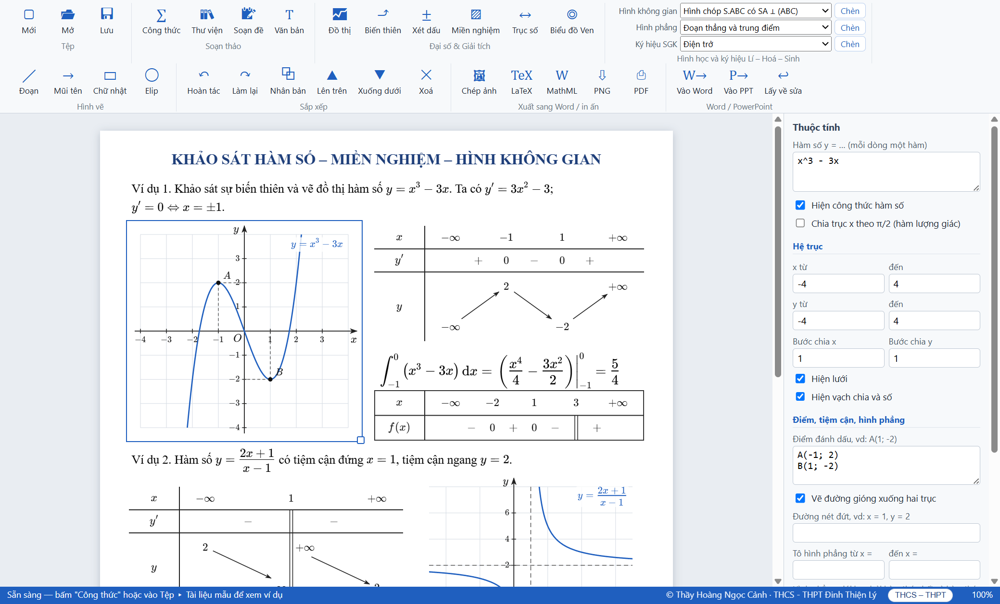
| Vùng | Dùng để |
|---|---|
| Thanh công cụ phía trên | Chèn công thức, văn bản, đồ thị, bảng, hình; sắp xếp; xuất; chèn sang Word/PowerPoint |
| Ba danh sách ở giữa thanh công cụ | Hình không gian, Hình phẳng, Ký hiệu SGK: chọn một mục rồi bấm Chèn bên cạnh |
| Trang giấy A4 | Nơi đặt các đối tượng; kéo để di chuyển |
| Khung Thuộc tính (bên phải) | Sửa nội dung và thông số của đối tượng đang chọn; hình cập nhật ngay khi gõ |
| Thanh trạng thái (dưới cùng) | Thông báo, bản quyền, mức phóng to |
| Muốn | Làm |
|---|---|
| Chọn | Nhấp vào đối tượng |
| Di chuyển | Kéo; hoặc phím mũi tên (1 px), Shift+mũi tên (10 px) |
| Đổi kích thước | Kéo ô vuông nhỏ ở góc dưới phải (với công thức là đổi cỡ chữ) |
| Sửa nội dung | Nhấp đúp, hoặc chọn rồi Enter / F2 |
| Xoá / nhân bản | Delete / Ctrl+D |
| Hoàn tác / làm lại | Ctrl+Z / Ctrl+Y |
| Đưa lên trên / xuống dưới | Nút Lên trên, Xuống dưới |
| Phóng to, thu nhỏ trang | Ctrl+lăn chuột, hoặc Ctrl+=, Ctrl+-, Ctrl+0 |
Bấm nút Công thức hoặc Ctrl+M để mở hộp soạn. Hộp này dùng chung cho mọi môn.
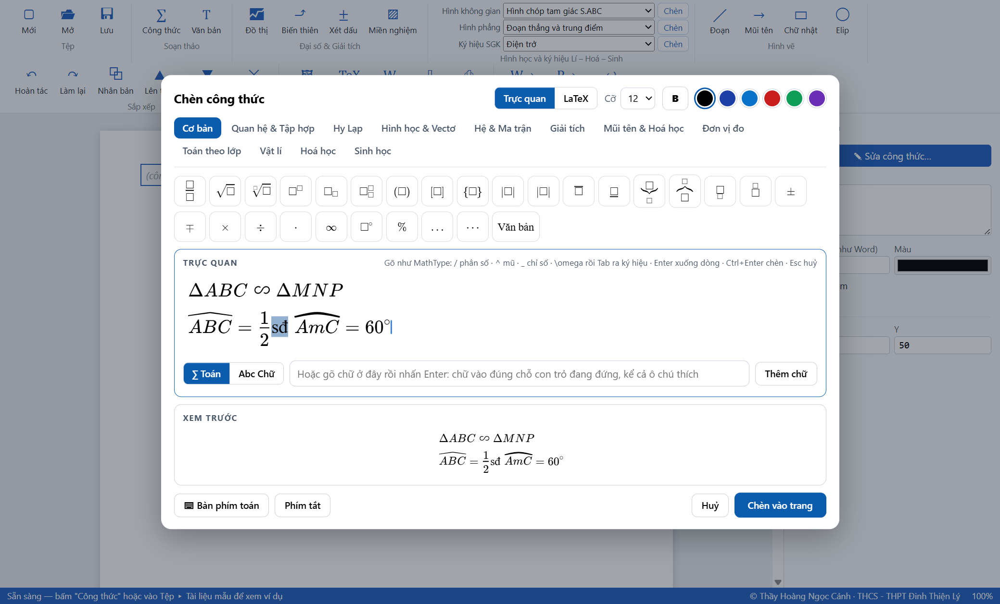
2 Space 1/3 được 2⅓, hiện liền như hỗn số trong sách (không có phím cách thì 21/3 là phân số 21 phần 3). Phím cách giữa hai nhóm chữ số dùng để tách lớp: 1 Space 000 được 1 000. Cũng có nút hỗn số ở thẻ Tiểu học.x^2 rồi → để ra khỏi mũ. Gõ // ra dấu song song ⫽ như sách (AB//CD), => ra ⇒, <=> ra ⇔.x=1 và) tự chuyển sang chữ đứng; gõ tiếp là chữ, bấm Ctrl+Shift+E hoặc nút ∑ Toán để quay lại gõ toán.\omega, \sqrt.Bôi chọn một phần đã gõ rồi bấm một mẫu (mũ góc, cung, gạch trên, phân số, căn…) thì mẫu bọc đúng phần đó. Đây là cách sửa nhanh nhất khi quên đặt dấu.
x^2-4=0, Enter, bấm Ctrl+K rồi L (ra ⇔), gõ x=, bấm Ctrl+K rồi + (ra ±), gõ 2, Enter, bấm Abc Chữ, gõ "Vậy phương trình có hai nghiệm.", Ctrl+Enter.Ctrl+G, Ctrl+T, Ctrl+K là phím mở đầu: bấm xong thả ra rồi gõ tiếp một phím. Rê chuột lên một nút ký hiệu sẽ thấy phím tắt của nó; nút Phím tắt hiện cả bảng.
| Phím | Kết quả |
|---|---|
| Ctrl+F / Ctrl+R | Phân số / căn bậc hai |
| Ctrl+H / Ctrl+L / Ctrl+J | Số mũ / chỉ số dưới / cả trên và dưới |
| Ctrl+I / Ctrl+Shift+I | Tích phân có cận / không cận |
| Ctrl+9 / Ctrl+[ / Ctrl+Shift+{ | Ngoặc tròn / vuông / nhọn |
| Ctrl+T rồi N / S / P / L | Căn bậc n / tổng ∑ / tích ∏ / giới hạn |
| Ctrl+T rồi A / C / V / O / | | Góc (mũ rộng) / cung / vectơ / gạch trên / giá trị tuyệt đối |
| Ctrl+T rồi H / M / U | Hệ phương trình / ma trận 2×2 / ngoặc ôm bên dưới |
| Ctrl+G rồi chữ cái | Chữ Hy Lạp: a→α, b→β, d→δ, D→Δ, p→π, q→θ, w→ω, f→φ, l→λ… |
| Ctrl+K rồi I / A / E / T / . | ∞ / → / ∈ / × / dấu nhân chấm |
| Ctrl+K rồi < / > / = / + | ≤ / ≥ / ≠ / ± |
| Ctrl+K rồi P / / / R / L / O / S | ⊥ / song song ⫽ (như sách) / ⇒ / ⇔ / độ ° / đồng dạng ∽ |
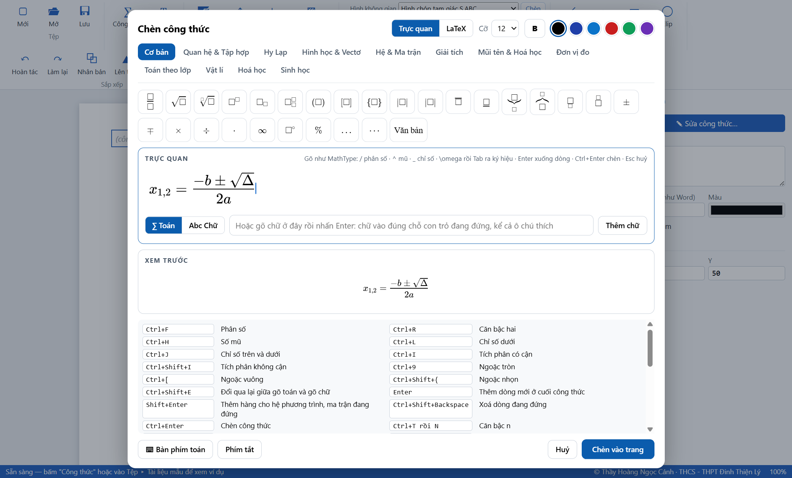
Bốn nhóm cuối trong hộp soạn là Toán theo lớp, Vật lí, Hoá học, Sinh học. Mỗi nhóm có hàng nút chọn lớp; phần mềm nhớ lớp bạn dùng lần cuối cho từng môn. Bấm một công thức mẫu để chèn rồi sửa số, sửa chữ cho hợp bài của mình. Các chương 5 – 8 giới thiệu từng môn.
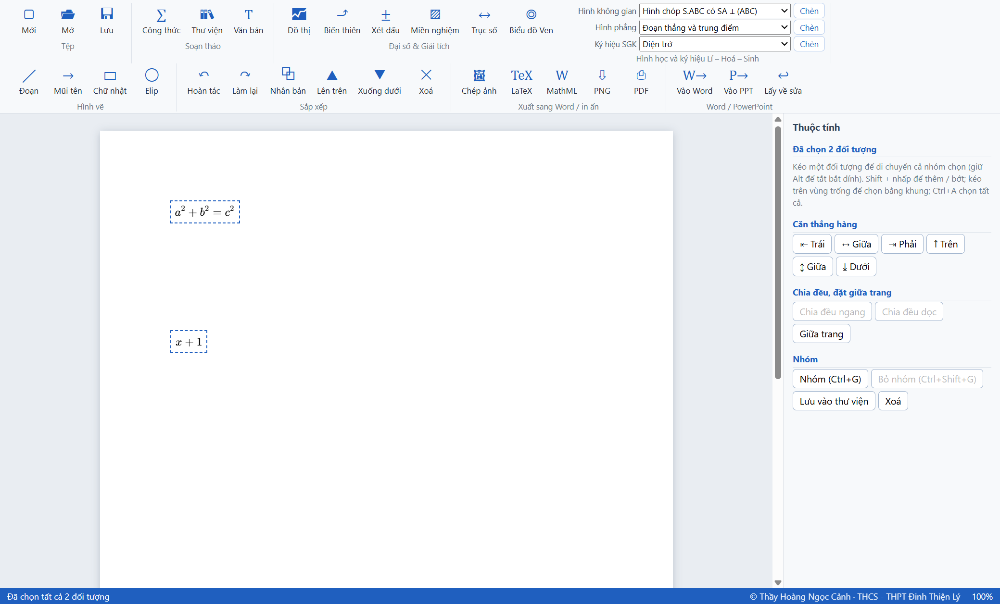
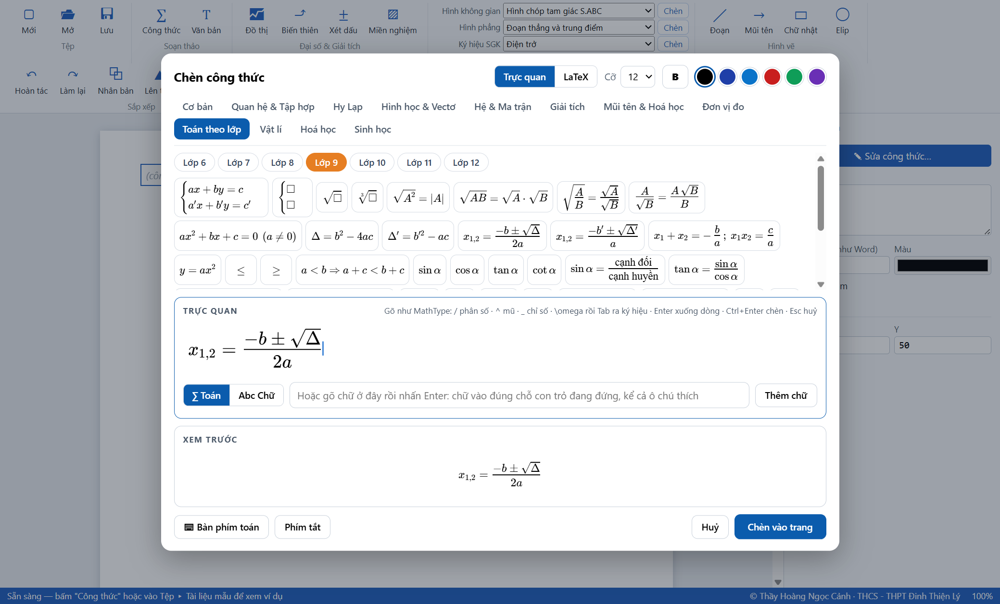
| Lớp | Nội dung chính |
|---|---|
| 6 | Tập hợp, chia hết, ƯCLN/BCNN, luỹ thừa, phân số và hỗn số, số nguyên, điểm – đường thẳng – góc |
| 7 | Số hữu tỉ, số thực, căn, giá trị tuyệt đối, tỉ lệ thức, tam giác bằng nhau |
| 8 | Hằng đẳng thức, phân thức, hàm số bậc nhất, Pythagore, Thalès, tam giác đồng dạng |
| 9 | Hệ phương trình, căn thức, phương trình bậc hai, tỉ số lượng giác, đường tròn, cung, trụ – nón – cầu |
| 10 | Mệnh đề, tập hợp, hệ thức lượng, vectơ, toạ độ, ba đường conic, tổ hợp, thống kê |
| 11 | Lượng giác, dãy số, giới hạn, mũ và logarit, đạo hàm, quan hệ song song và vuông góc |
| 12 | Cực trị, tiệm cận, nguyên hàm và tích phân, toạ độ Oxyz, xác suất có điều kiện |
Cú pháp biểu thức dùng chung: x^3-3x+1 · (2x+1)/(x-1) · sqrt(x) · |x| · sin x · ln(x) · log(x) · e^x · 2^x · pi
| Công cụ | Cách dùng |
|---|---|
| Đồ thị | Mỗi dòng một hàm. Đặt khoảng x, y và bước chia ở mục Hệ trục; có lựa chọn chia trục x theo π/2. Điểm đánh dấu A(1; -2) kèm đường gióng. Đường nét đứt x = 1, y = 2 cho tiệm cận. Tô hình phẳng giữa hai hàm (hoặc với trục Ox) từ x = a đến x = b. |
| Biến thiên | Nhập hàm số, bấm Lập bảng biến thiên tự động. Có thể giới hạn khoảng khảo sát. Sửa tay từng hàng bằng LaTeX, các ô ngăn cách bằng |, kể cả giá trị chứa tham số như \frac{m}{2}. |
| Xét dấu | Nhập biểu thức, bấm Lập bảng xét dấu tự động. |
| Miền nghiệm | Mỗi dòng một bất phương trình, dùng <=, >=, <, >. Chọn kiểu gạch bỏ phần không là nghiệm (như sách giáo khoa) hoặc tô màu miền nghiệm; có thể ghi toạ độ các đỉnh. |
Trong bảng biến thiên: +, - là dấu; x là khoảng không xác định; || là không xác định tại điểm; ở hàng y viết -\infty || +\infty cho giới hạn trái || phải.
Hai nút Trục số và Biểu đồ Ven trong nhóm Đại số & Giải tích. Bạn chỉ nhập thông tin; vị trí điểm, ngoặc, phần gạch bỏ và kết quả phép toán do phần mềm tự tính. Ô Mẫu ở đầu khung Thuộc tính có sẵn các dạng của SGK lớp 6, 7, 8, 10.
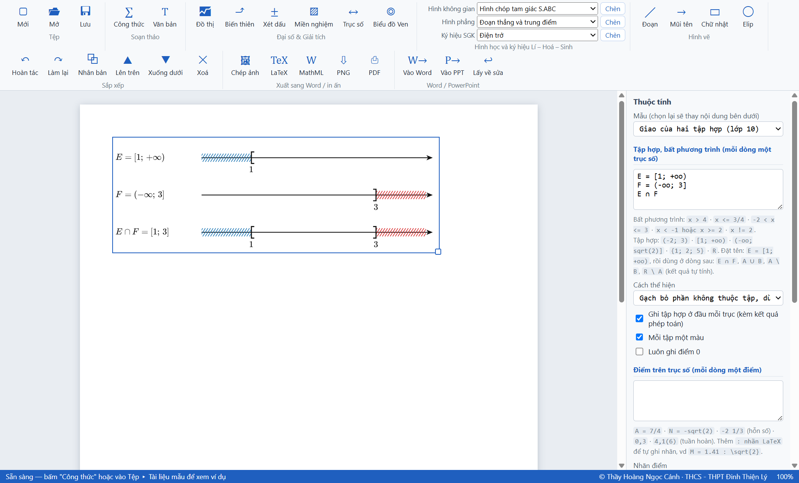
| Muốn vẽ | Gõ vào khung Thuộc tính |
|---|---|
| Điểm trên trục số (lớp 6, 7) | Ô Điểm, mỗi dòng một điểm: A = 7/4 · N = -sqrt(2) · -2 1/3 (hỗn số) · 0,3 · 4,1(6) (số thập phân vô hạn tuần hoàn). Chọn Nhãn điểm: tên ở trên, hoặc giá trị ở trên và tên ở dưới. |
| Chia đơn vị thành nhiều phần (số hữu tỉ) | Bật Vạch chia đơn vị, đặt Chia mỗi đơn vị thành = 4 (hoặc 3, 5, 10…). |
| Tập nghiệm bất phương trình (lớp 8, 10) | Ô Tập hợp, bất phương trình: x > 4 · x <= 3/4 · -2 < x <= 3 · x < -1 hoặc x >= 2 · x != 2 |
| Khoảng, đoạn, nửa khoảng (lớp 10) | (-2; 3) · [-2; 3] · [1; +oo) · (-oo; sqrt(2)] · {1; 2; 5} · R. Viết oo cho ∞. |
| Giao, hợp, hiệu, phần bù | Mỗi dòng một trục; đặt tên rồi dùng ở dòng sau: E = [1; +oo), F = (-oo; 3], E ∩ F. Cũng gõ được A ∪ B, A \ B, R \ A, \cap, \cup. Bật Ghi tập hợp ở đầu mỗi trục để có thêm kết quả, ví dụ "E ∩ F = [1; 3]". |
Cách thể hiện: Gạch bỏ phần không thuộc tập, dùng ngoặc theo kiểu SGK, hoặc Tô đậm phần thuộc tập, chấm tròn đặc / rỗng. Mỗi tập một màu cho hình giao – hợp giống SGK lớp 10. Mỗi dòng thêm vào ô tập hợp là thêm một trục số; chiều cao hình tự tăng theo.
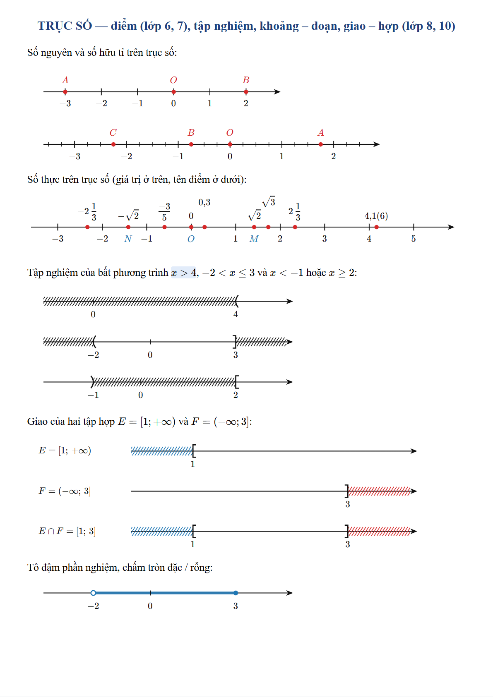
Biểu đồ Ven: chọn Kiểu biểu đồ (một tập, hai tập cắt nhau, rời nhau, B ⊂ A, ba tập), đặt Tên các tập (vd C, D), bật tập bao (khung chữ nhật U hoặc E) nếu cần.
C: 7 (chỉ thuộc C) · CD: 4; 27 (thuộc cả C và D) · ABC: 0 · ngoài: 8; 9. Các phần tử cách nhau bằng dấu ;.A ∩ B · A ∪ B · A \ B · (A ∪ B) ∩ C · A' · E \ A (phần bù). Kiểu tô: màu hoặc gạch chéo.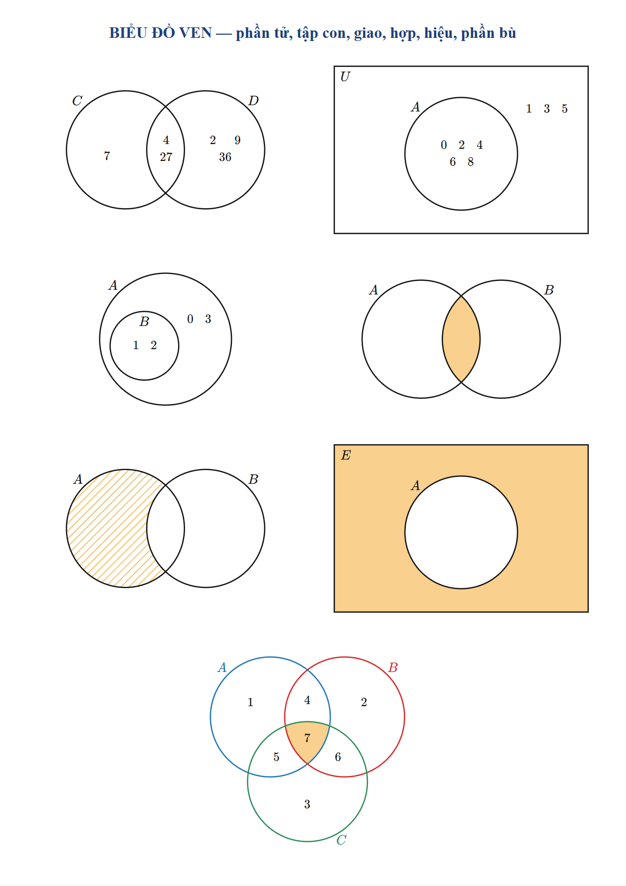
Chọn một hình trong danh sách Hình phẳng rồi bấm Chèn. Có 40 mẫu, chia theo: điểm – đoạn thẳng – góc; tam giác; tứ giác và đa giác; đường tròn; vectơ và lượng giác.
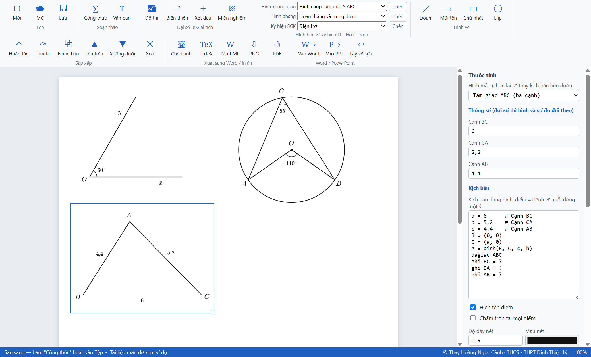
Không cần gõ kịch bản cho các thao tác thường gặp. Khi chọn một hình phẳng hoặc hình không gian tự dựng, mỗi điểm hiện một chấm tròn:
C = (a, 0), A = tron(D, b, goc)): kéo để đổi thông số. Phần mềm tự tính ra giá trị mới của a, b, góc… và ô Thông số cập nhật theo, nên số đo trên hình luôn khớp.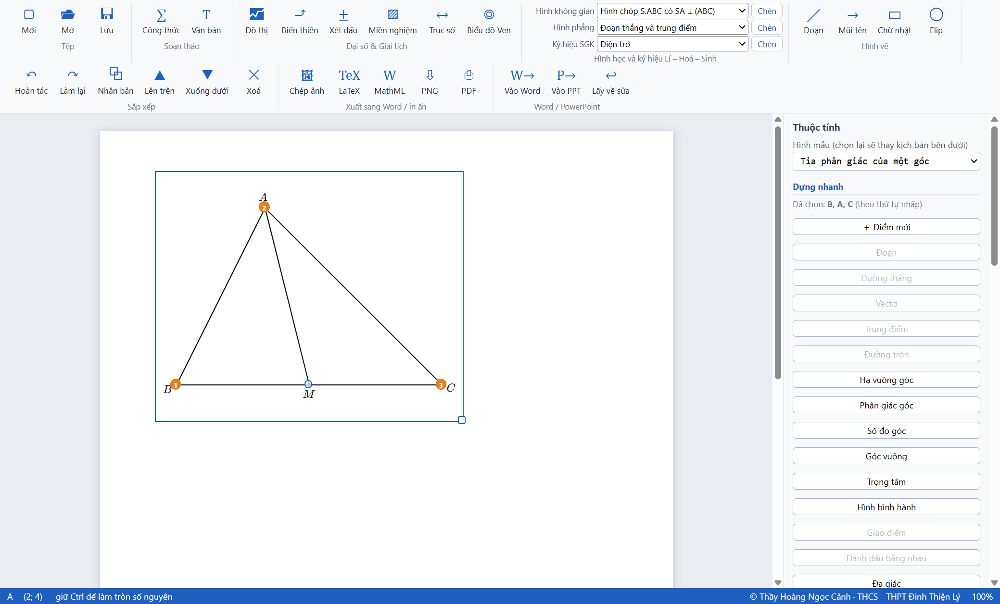
Mỗi hình phẳng là một kịch bản: mỗi dòng dựng một điểm hoặc vẽ một nét. Sửa kịch bản là hình cập nhật ngay. Ví dụ dựng tam giác có đường cao và trung tuyến:
a = 6 # Cạnh BC B = (0, 0) C = (a, 0) A = (1.8, 4) H = chan(A, B, C) # chân đường cao từ A M = trungdiem(B, C) dagiac ABC doan AH AM vuong AHC bang BM MC goc BAC = ? ghi BC = ? cm
| Loại | Cách viết |
|---|---|
| Thông số | so_do = 60 # chú thích — tên viết thường; dùng lại trong toạ độ và phép dựng |
| Điểm | A = (1, 2) · trungdiem(A, B) · chan(A, B, C) · phangiac(A, B, C) · trongtam · tructam · tamnoi · tamngoai · giao(A, B, C, D) · chia(A, B, 1/3) · doixung(A, O) · doixungtruc(A, B, C) · quay(A, O, 60) · tinhtien(A, B, C) · hbh(A, B, C) · tron(O, 3, 45) · tiepdiem(M, O, A, 1) · dinh(B, C, c, b) |
| Nét vẽ | doan AB CD · netdut AH · dagiac ABCD · duongthang AB · tia OA · vecto AB · duongtron O A hoặc duongtron O 2.5 · ngoaitiep ABC · noitiep ABC · cung O A B · quat O A B · to ABC |
| Ký hiệu | goc BAC = 60^{\circ} hoặc goc BAC = ? (số đo thật; thêm x2 để vẽ hai cung) · vuong BAC · bang AB AC = 1 · ssong AB CD · ghi AB = ? cm · diem M N · an P Q · nhan A = x |
Nhóm đầu của danh sách Hình không gian gồm: chóp S.ABC có SA ⊥ đáy, chóp tam giác đều, chóp tứ giác đều, chóp S.ABCD có SA ⊥ đáy, tứ diện, hình hộp chữ nhật, lập phương, lăng trụ đứng, lăng trụ xiên, chóp cụt, hình trụ, hình nón, nón cụt, hình cầu. Mỗi khối là một kịch bản nên chỉnh được mọi thứ như hình phẳng:
M = trungdiem(S, C), doan AC BD SO, vuong SAB… Cạnh và đường bị các mặt của khối che sẽ tự vẽ nét đứt, kể cả đường chéo đáy, đường cao vẽ thêm.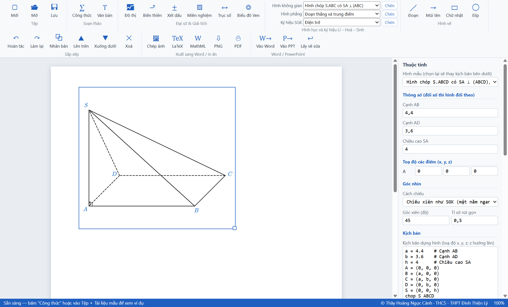
| Lệnh dựng khối | Ý nghĩa |
|---|---|
chop S ABCD | Hình chóp đỉnh S, đáy ABCD (đáy bao nhiêu đỉnh cũng được) |
langtru ABC A1B1C1 | Lăng trụ, hình hộp, chóp cụt: hai đáy có cùng số đỉnh |
tudien ABCD · khoi ABC, ABD, … | Tứ diện · khối đa diện bất kỳ cho bằng danh sách các mặt |
tru O O1 r · non O S r · noncut O O1 r1 r2 · cau O r | Hình trụ, nón, nón cụt, cầu; đường đáy phía sau tự đứt nét |
A = tron(O, r, -40) | Điểm trên đường tròn nằm ngang tâm O (đặt bán kính OA, đường sinh SA…) |
Các hình khối cũ (đã chèn ở bản trước) vẫn mở và sửa được như trước.
Cuối danh sách Hình không gian có hai nhóm mẫu theo SGK Toán 11: Quan hệ song song (vị trí hai đường thẳng, đường thẳng cắt / song song với mặt phẳng, giao tuyến, hai mặt phẳng song song, định lí Thalès, phép chiếu song song) và Quan hệ vuông góc (góc giữa hai đường thẳng, đường thẳng vuông góc với mặt phẳng, mặt phẳng trung trực, định lí ba đường vuông góc, góc giữa đường thẳng và mặt phẳng, hai mặt phẳng vuông góc, góc nhị diện, khoảng cách).
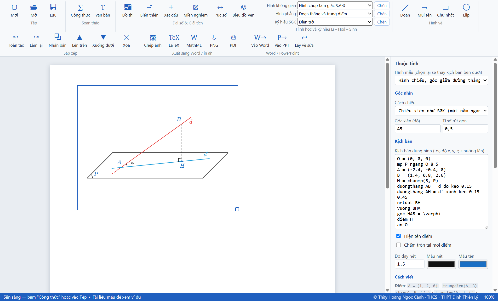
Mỗi hình là một kịch bản trong không gian (toạ độ x sang phải, y ra phía sau, z hướng lên). Điểm chính của công cụ: phần đường thẳng, cạnh bị mặt phẳng che sẽ tự vẽ nét đứt, như đường Δ xuyên qua (P) trong SGK. Ký hiệu góc vuông, cung góc được vẽ đúng trong không gian.
O = (0, 0, 0) mp P ngang O 8 5 # mặt phẳng nằm ngang, rộng 8, sâu 5 A = (-2.4, -0.4, 0) B = (1.4, 0.8, 2.6) H = chanmp(B, P) # hình chiếu vuông góc của B lên (P) duongthang AB = d do keo 0.15 duongthang AH = d' xanh netdut BH vuong BHA goc HAB = ? # ghi số đo góc thật
| Loại | Cách viết |
|---|---|
| Mặt phẳng | mp P ngang O 8 5 · mp Q dung O 6 4 30 (thẳng đứng, quay 30°) · mp Q nghieng O 6 4 50 · mp R: A B C D (qua các điểm) · thêm lien để cạnh luôn nét liền · nhanmp P 2 đặt tên ở góc thứ 2 · tên alpha hiện thành α |
| Dựng điểm | chanmp(M, P) · vuonggoc(H, P, 3) (điểm trên đường vuông góc với (P) tại H) · giao(A, B, P) (giao điểm của AB và (P)) · giao(A, B, C, D) · chieu(M, P, A, B) (chiếu song song theo phương AB) · chan(M, A, B) · trungdiem · chia · tinhtien(M, A, B) · trenmp(P, 0.3, 0.6) · doixungmp(M, P) |
| Nét vẽ | doan AB · duongthang AB = a do keo 0.3 (tên a, màu đỏ, kéo dài) · tia · vecto · netdut / netlien (bắt buộc kiểu nét). Màu: do, xanh, xanhla, den, xam, cam, tim |
| Ký hiệu | vuong SHA · goc HAB = \varphi hoặc = ? · bang AI IB = 1 · ghi MH = ? · diem H · an X · nhan A1 = A' · vitri A tren |
Khung Thuộc tính có thêm Cách chiếu: chiếu xiên như SGK (mặt nằm ngang vẽ thành hình bình hành; chỉnh góc xiên và tỉ số rút gọn) hoặc xoay tự do. Những dòng ten = số # chú thích trong kịch bản hiện thành ô Thông số (ví dụ số đo góc nhị diện, khoảng cách MH).
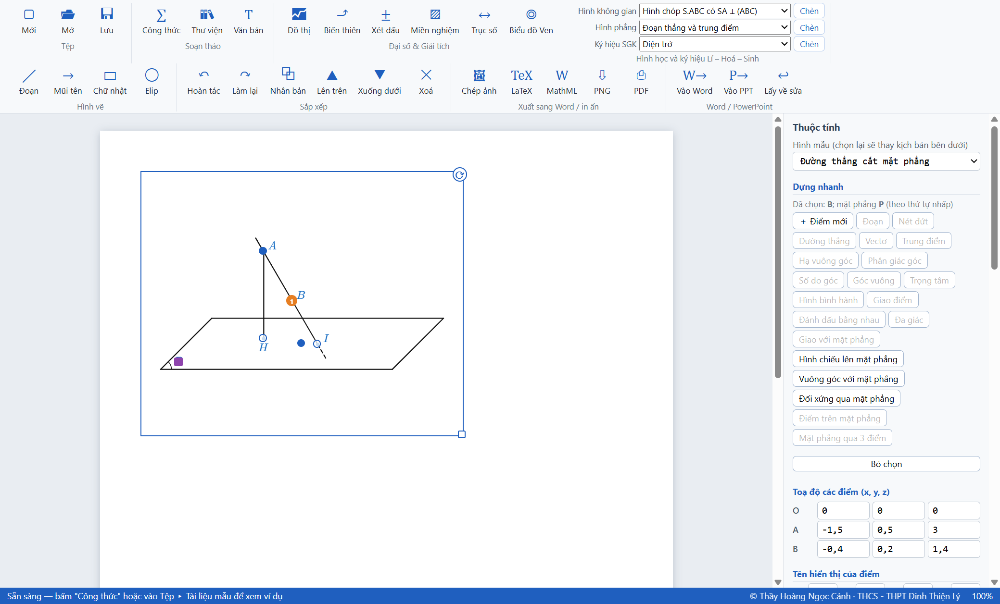
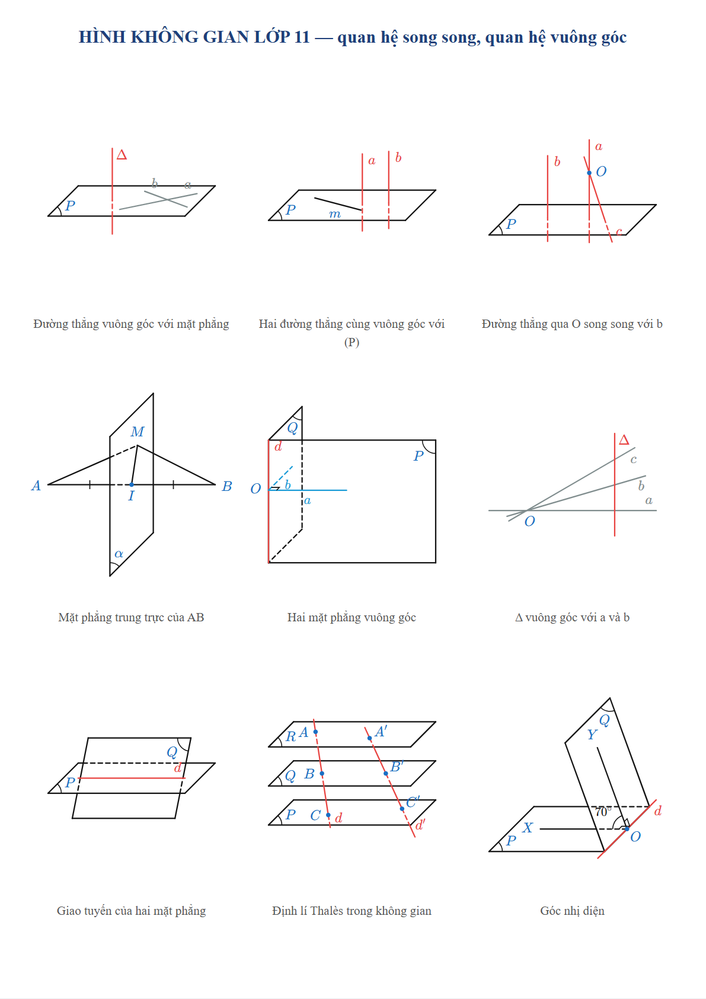
Lớp 10: cuối danh sách Hình phẳng có nhóm Vectơ: vectơ cùng phương, cùng hướng, bằng nhau; quy tắc ba điểm; quy tắc hình bình hành; hiệu hai vectơ; tích của vectơ với một số; trọng tâm tam giác; góc giữa hai vectơ; toạ độ vectơ trong mặt phẳng Oxy; hợp lực (dùng cho Vật lí).
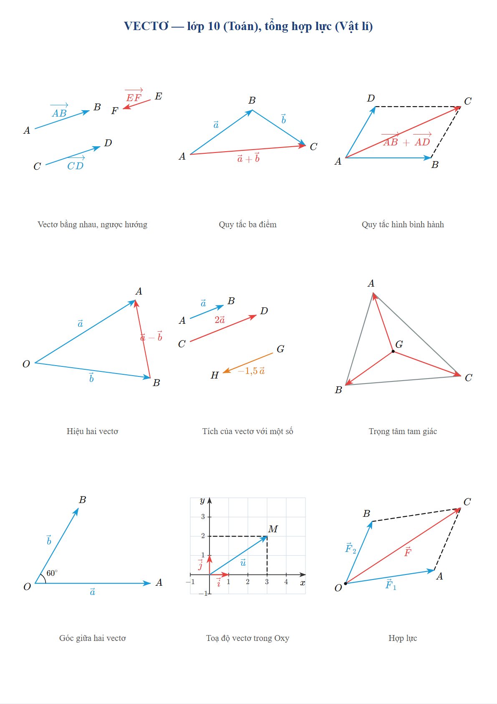
| Muốn | Viết trong kịch bản Hình phẳng |
|---|---|
| Vectơ có tên, có màu | vecto AB = \vec{a} xanh · vecto AC = \overrightarrow{AB}+\overrightarrow{AD} do. Tên và màu dùng được cho cả doan, duongthang, tia. |
| Hệ trục Oxy | truc -1 5 -1 4 luoi: trục x từ −1 đến 5, trục y từ −1 đến 4, có vạch chia, số và lưới ô vuông (bỏ chữ luoi nếu không cần lưới). |
| Đổi số liệu | Các dòng như ux = 3 # Hoành độ của u hiện thành ô Thông số; đổi số thì vectơ và đường gióng đổi theo. |
Lớp 12: cuối danh sách Hình không gian có nhóm Vectơ và hệ trục toạ độ trong không gian: quy tắc hình hộp, vectơ trong tứ diện, góc giữa hai vectơ, hệ trục Oxyz với các vectơ đơn vị, toạ độ của điểm, toạ độ của vectơ, gắn hệ trục vào hình hộp chữ nhật và hình chóp.
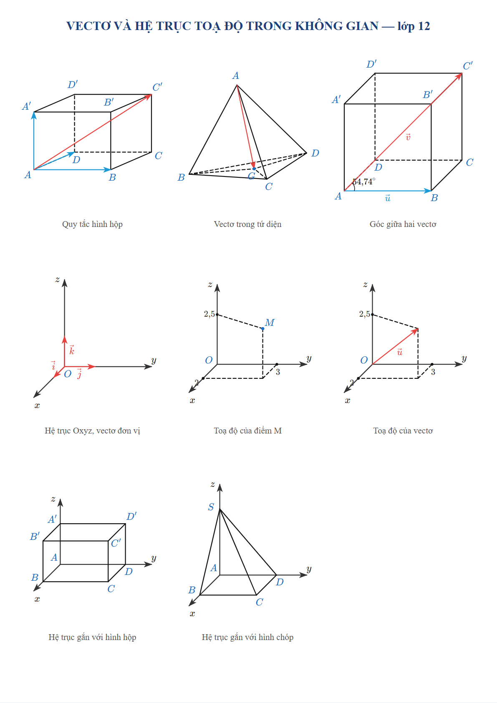
oxyz # toạ độ theo SGK 12: Ox về phía người nhìn, Oy sang phải, Oz lên trên
xm = 2 # Hoành độ x
ym = 3 # Tung độ y
zm = 2.5 # Cao độ z
truc 4 4.5 4 # vẽ ba trục Ox, Oy, Oz
O = (0, 0, 0)
M = (xm, ym, zm)
toado M # đường gióng nét đứt và các toạ độ trên trục
vecto OM = \vec{u} do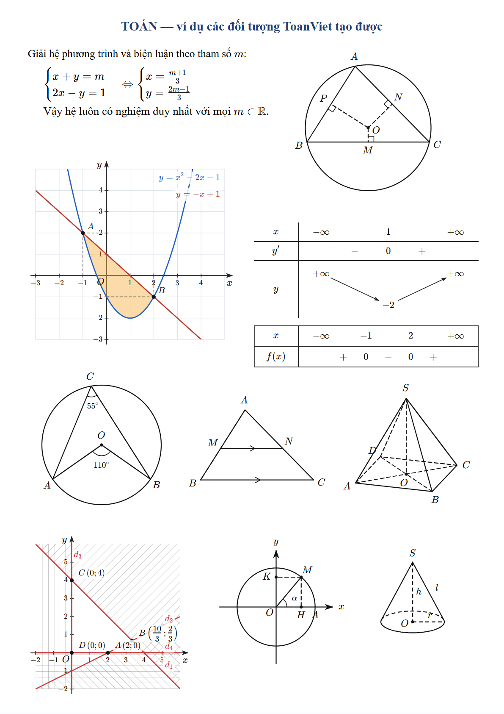
Cách trình bày (đặt tính, sơ đồ, đồng hồ, biểu đồ…) theo sách Toán 1 – 5 Kết nối tri thức với cuộc sống — bộ sách giáo khoa dùng thống nhất từ năm 2026. Mọi hình đều được phần mềm vẽ lại bằng nét, không dùng hình ảnh của sách.
Vào Xem ▸ Chế độ Tiểu học (Ctrl+Shift+T) hoặc nhấp vào chữ THCS – THPT ở góc phải thanh trạng thái. Thanh công cụ hiện nhóm Tiểu học (lớp 1–5), các công cụ của cấp 2, 3 (đồ thị, bảng biến thiên, miền nghiệm…) được ẩn bớt cho gọn. Phần mềm nhớ chế độ đã chọn cho lần mở sau.
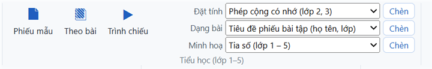
Đặt tính theo cột. Chọn mẫu ở ô Đặt tính rồi bấm Chèn. Ở khung Thuộc tính, gõ phép tính vào ô Phép tính: 356 + 278, 732 - 458, 236 x 47, 4536 : 12, 45,08 + 24,9. Phần mềm tự tính và trình bày như sách giáo khoa:
27 : 4 chia tiếp 2 chữ số được 6,75. Số chia là số thập phân thì phần mềm tự chuyển dấu phẩy như SGK (23,56 : 6,2 thành 235,6 : 62).Dùng làm bài tập: ở mục Phần cho học sinh làm chọn Để trống kết quả, Ô trống ở từng chữ số, hoặc Điền chữ số còn thiếu (giấu ngẫu nhiên một số chữ số; đổi Số xáo để giấu chỗ khác). Bật Hiện đáp án để có bản cho giáo viên: chữ số bị giấu hiện màu đỏ. Kéo ô vuông ở góc để phóng to, thu nhỏ.
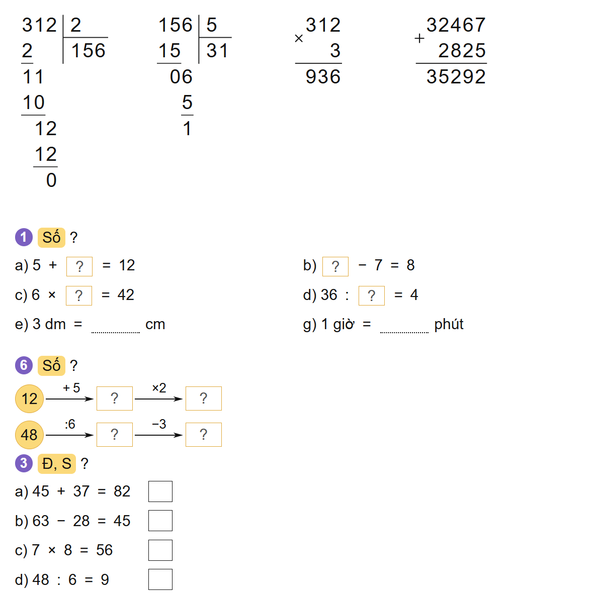
Các dạng bài trên phiếu. Chọn ở ô Dạng bài rồi bấm Chèn; sửa đề bài và nội dung ở khung Thuộc tính, mỗi dòng một ý:
| Dạng bài | Cách viết nội dung |
|---|---|
| Số? (ô trống, chỗ chấm) | 5 + [] = 12: ô trống, đáp án tự tính · [7]: ô trống có đáp án 7 · 3 dm = {30} cm: chỗ chấm · phân số 3/4, nhân x, chia : |
| Điền dấu >, <, = | 27 + 8 (?) 35: dấu đúng tự tính |
| Đúng ghi Đ, sai ghi S | a) 45 + 37 = 82: tự biết đúng hay sai · câu bằng chữ thì thêm [Đ] hoặc [S] ở cuối |
| Khoanh vào chữ trước câu trả lời đúng | Dòng đầu là câu hỏi, các dòng sau là phương án, dấu * trước phương án đúng; các câu cách nhau một dòng trống |
| Nối | 8 x 7 | 56: mỗi dòng một cặp đúng, cột phải tự xáo thứ tự |
| Máy tính mũi tên | 12 -> +5 -> [] -> x2 -> [] |
| Bảng số | Thừa số | 2 | 3, các ô cách nhau bằng |; [12] là ô để trống |
| Dòng kẻ ô li | Mỗi dòng là các chữ số mẫu viết ở đầu dòng, mỗi số một ô |
| Tiêu đề phiếu | Tên phiếu, rồi Họ và tên: {} Lớp: {} |
Đề bài viết như Bài 1. Số? được trình bày như sách: số 1 trong hình tròn tím, chữ Số trong ô vàng (cũng vậy với Đ, S ? và >, <, = ?); chọn Cách ghi đề bài: Chữ "Bài 1." in đậm nếu muốn kiểu thường. Bật Ghi dấu ? trong ô trống để ô trống giống sách.
Bấm Phiếu mẫu để có ngay một phiếu gồm tiêu đề, bài Số?, điền dấu, Đúng/Sai và bốn phép đặt tính; sửa từng phần cho đúng bài đang dạy. Mỗi dạng bài đều có Hiện đáp án để in bản cho giáo viên.
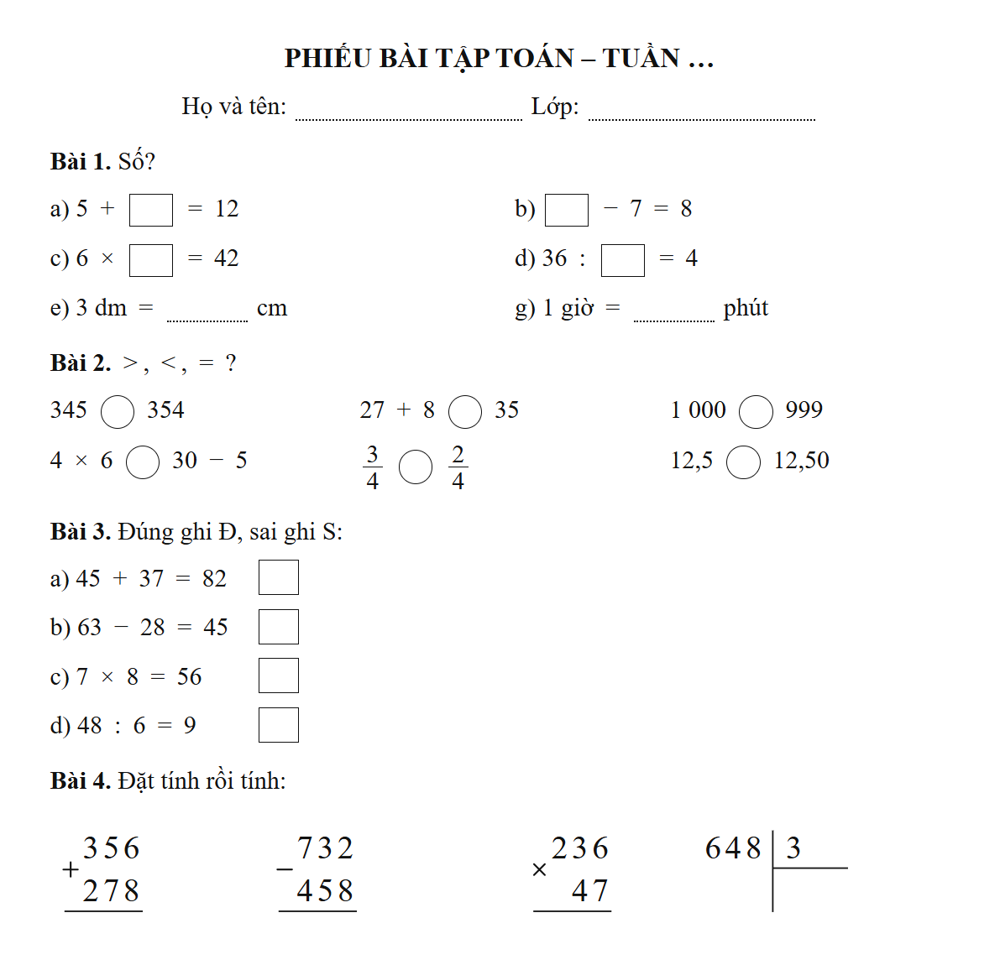
Công thức theo quy ước tiểu học. Ở chế độ Tiểu học, hộp soạn công thức mở sẵn thẻ Tiểu học: dấu × và :, ô trống, hình tròn, hỗn số, số thập phân, các đơn vị đo (cm², dm³, yến, tạ, tấn, km/giờ…). Khi chèn, số thập phân 2,5 được viết sát dấu phẩy (không có khoảng trắng như kiểu nước ngoài) và dấu * đổi thành ×. Nút Tia số chèn tia số bắt đầu từ 0.
5 + [] = 12 thành 8 + [] = 15. Nhấp vào phép chia, gõ 936 : 4. Bật Hiện đáp án để xem bản cho giáo viên, tắt đi rồi bấm PDF để in cho học sinh.Ô Minh hoạ ở nhóm Tiểu học có gần 40 mẫu, xếp theo nhóm; chọn rồi bấm Chèn, sửa số liệu ở khung Thuộc tính, hình vẽ lại ngay:
? quyển, 30 quyển…).ABCD: 1,1 6,1 6,5 1,5 to); thước đo góc đặt lên góc (vạch 0 trùng cạnh nằm ngang); hình khai triển hình hộp chữ nhật, hình lập phương, hình trụ; hình xếp từ các khối lập phương nhỏ.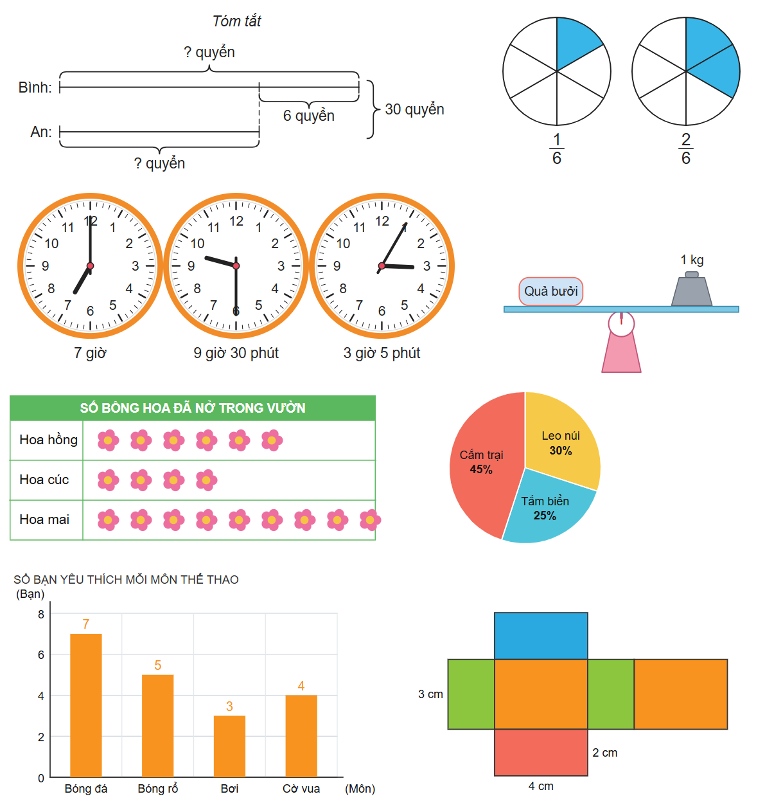
Bấm Theo bài (hoặc Tệp ▸ Mẫu theo bài, Ctrl+Shift+M), chọn lớp 1 – 5, chọn bài đang dạy rồi bấm Chèn: các dạng bài, phép đặt tính, hình minh hoạ hợp với bài đó được đặt sẵn trên trang. Có hơn 70 bài; tên chủ đề, tên bài theo sách, còn đề bài và số liệu là bài tập tự soạn để thầy cô sửa lại.
Bấm Trình chiếu hoặc F5: thanh công cụ ẩn đi, trang phóng to vừa màn hình.
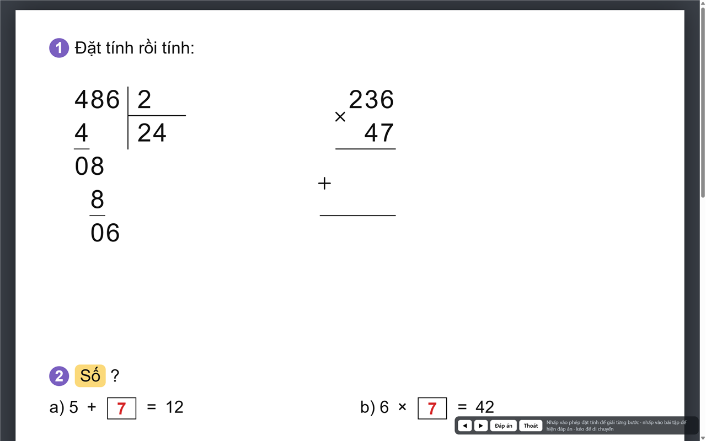
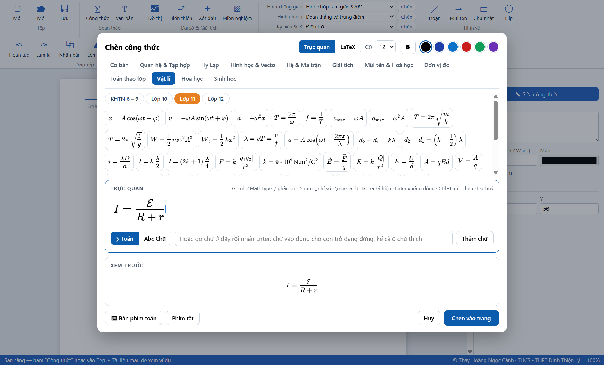
| Mục | Có sẵn |
|---|---|
| KHTN 6 – 9 | Tốc độ, khối lượng riêng, áp suất, lực đẩy Archimedes, công, công suất, nhiệt lượng, định luật Ohm, điện trở, đoạn mạch nối tiếp và song song, khúc xạ, thấu kính; các đơn vị đo |
| Lớp 10 | Chuyển động thẳng biến đổi đều, rơi tự do, ném ngang, ba định luật Newton, ma sát, moment lực, công – năng lượng, động lượng, chuyển động tròn, lực đàn hồi, áp suất chất lỏng |
| Lớp 11 | Dao động điều hoà, con lắc, sóng và giao thoa, sóng dừng, định luật Coulomb, điện trường, điện thế, tụ điện, dòng điện, nguồn điện |
| Lớp 12 | Khí lí tưởng, nhiệt động lực học, từ trường, cảm ứng điện từ, dòng điện xoay chiều, hạt nhân, phóng xạ; ký hiệu hạt |
Trong danh sách Ký hiệu SGK, ba nhóm đầu dành cho Vật lí:
Ở khung Thuộc tính của ký hiệu: ô Nhãn phía trên nhận LaTeX (ví dụ R_1, \mathcal{E},\ r); có thể tắt chữ chú thích có sẵn trong hình; kéo góc để co giãn.
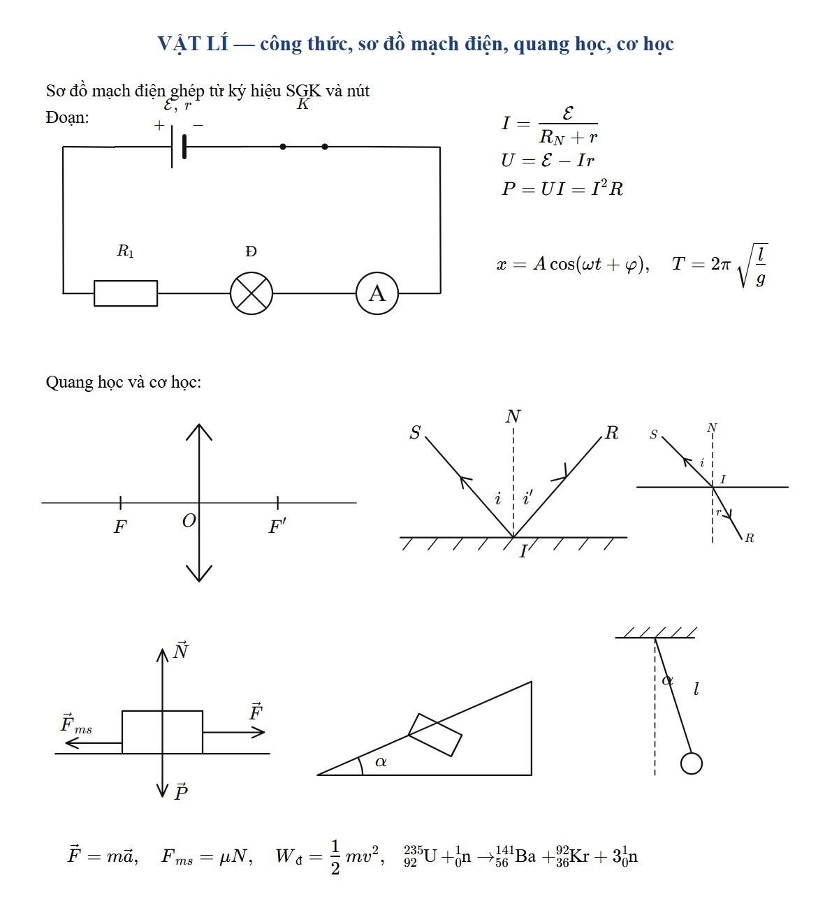
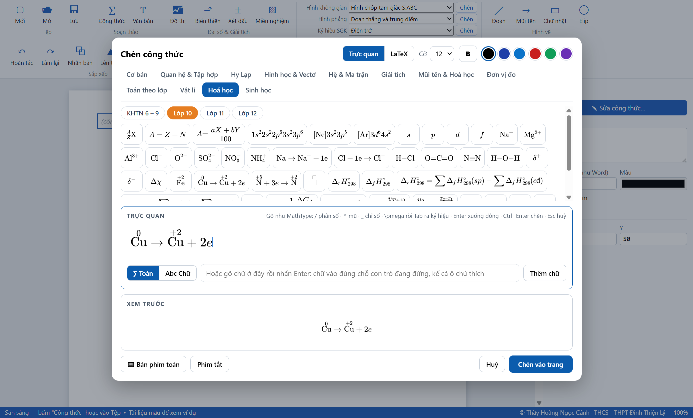
| Mục | Có sẵn |
|---|---|
| KHTN 6 – 9 | Công thức các chất thường gặp, mũi tên phản ứng (có điều kiện nhiệt độ, xúc tác), ký hiệu ↑ ↓, số mol, nồng độ, độ tan, hiệu suất, một số phương trình mẫu |
| Lớp 10 | Ký hiệu nguyên tử, cấu hình electron, ion, liên kết, số oxi hoá, biến thiên enthalpy, tốc độ phản ứng, nhóm halogen |
| Lớp 11 | Cân bằng hoá học, hằng số KC, pH, nitơ và lưu huỳnh, công thức chung và công thức cấu tạo hữu cơ, phản ứng hữu cơ |
| Lớp 12 | Ester, chất béo, carbohydrate, amine, amino acid, polymer, pin điện hoá, điện phân, kim loại, phức chất |
Abc (chữ đứng) trong nhóm Mũi tên & Hoá học, rồi gõ H_2SO_4; chỉ số dưới gõ bằng _.Fe^{3+}, SO_4^{2-}.ud là hai electron ghép đôi, u là một electron, d là một electron quay xuống, - là ô trống. Ví dụ phân lớp 2p4: ud u u. Đặt tên phân lớp ở ô Nhãn phía trên.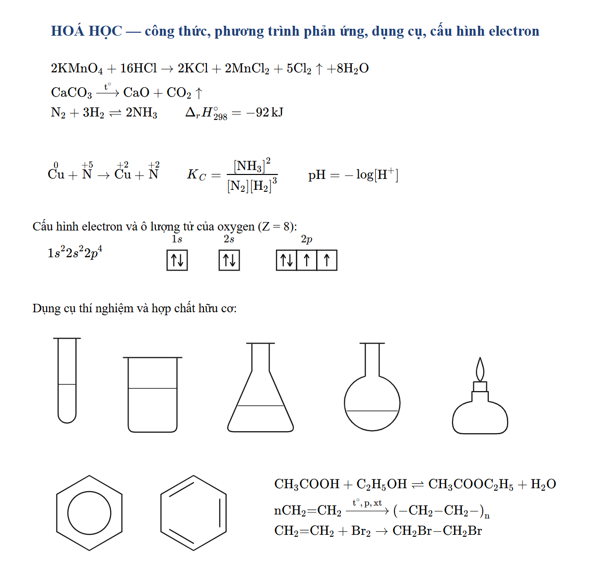
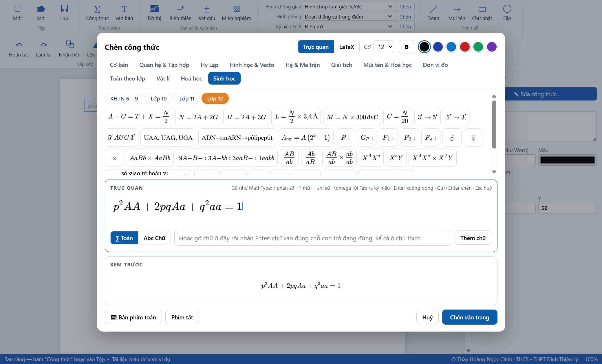
| Mục | Có sẵn |
|---|---|
| KHTN 6 – 9 | ♂, ♀, P, G, F1, F2, kiểu gen, tỉ lệ 3:1, 1:2:1, 9:3:3:1, bộ NST, quang hợp, hô hấp, nguyên tắc bổ sung, chiều dài ADN |
| Lớp 10 | Thành phần hoá học của tế bào, ATP, quang hợp, hô hấp, lên men, nguyên phân và giảm phân, sinh trưởng của vi sinh vật |
| Lớp 11 | Trao đổi nitơ, quang hợp C3, C4, CAM, hô hấp, ion và điện thế nghỉ, huyết áp, hoocmôn thực vật |
| Lớp 12 | Công thức ADN, mã di truyền, phép lai, liên kết gen và hoán vị gen, di truyền liên kết giới tính, đột biến số lượng NST, cân bằng Hardy – Weinberg, sinh thái |
Sơ đồ lai là một công thức nhiều dòng. Trong hộp soạn, mở nhóm Sinh học rồi:
P:, bấm ♂, gõ AA, bấm ×, bấm ♀, gõ aa.G:, gõ giao tử.F₁:, gõ kết quả. Làm tiếp cho F2.Kiểu gen liên kết viết bằng phân số (Ctrl+F): AB trên ab. Gen trên NST giới tính viết bằng số mũ: gõ X^A.
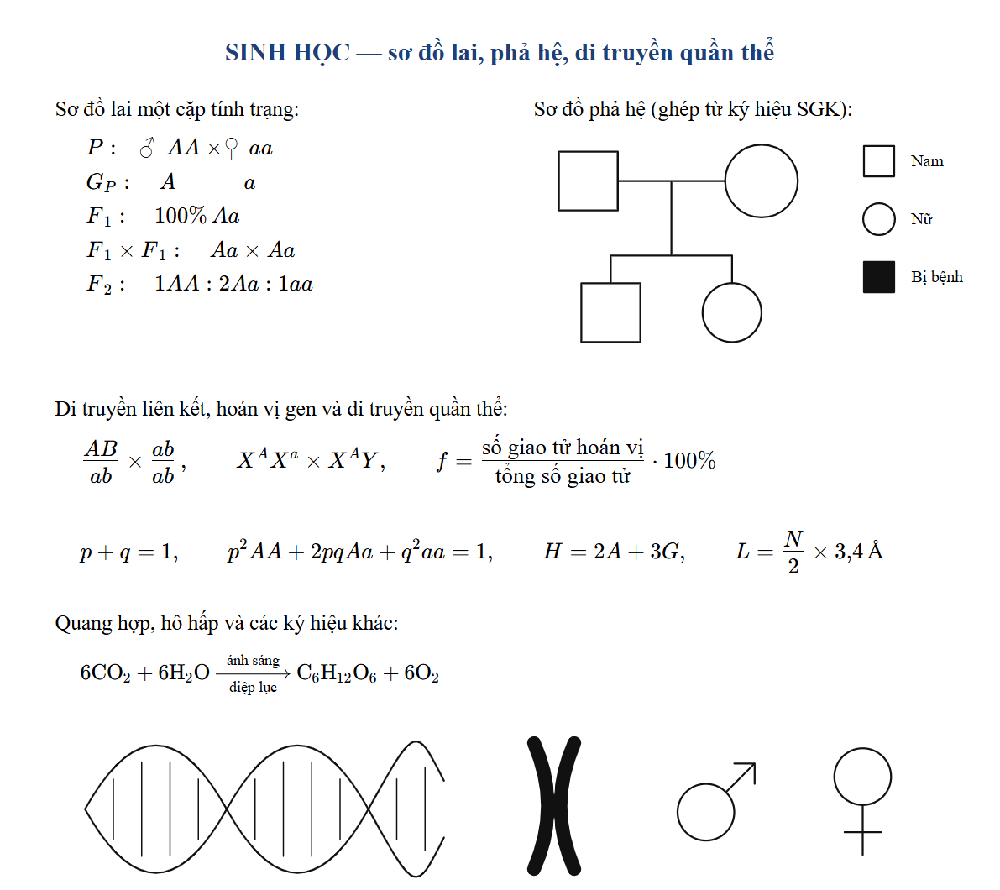
Sau khi cài, Word có thẻ ToanViet (hình dưới là hình vẽ lại):
PowerPoint có hai nút Công thức mới và Đồ thị, bảng, hình.
Khi mở từ Word, hộp soạn có ô Chèn dạng Equation của Word. Phần mềm nhớ lựa chọn cho lần sau.
| Ảnh ToanViet (mặc định) | Equation của Word | |
|---|---|---|
| Giữ đúng hình thức | Có: dấu đồng dạng kiểu SGK, màu, chữ đậm, nhiều dòng | Gần đúng; dấu đồng dạng thành ∽ chuẩn |
| Cỡ chữ | Cố định khi chèn | Theo cỡ chữ của dòng, đổi cùng đoạn văn |
| Tìm kiếm, sửa trên máy khác | Cần ToanViet để sửa | Tìm được; ai có Word cũng sửa được |
| Mở lại bằng ToanViet | Nhấp đúp | Đặt con trỏ vào công thức, bấm Ctrl+Alt+E |
| Loại công thức | Cách mở lại |
|---|---|
| Công thức ToanViet | Nhấp đúp; hoặc chọn rồi Ctrl+Alt+E; hoặc chuột phải ▸ Sửa bằng ToanViet |
| Công thức MathType | Nhấp chọn rồi Ctrl+Alt+E (nhấp đúp vẫn mở MathType như cũ) |
| Công thức Equation của Word | Đặt con trỏ vào trong công thức rồi Ctrl+Alt+E |
Sửa xong bấm chèn thì bản mới thay cho công thức cũ; bấm Esc thì tài liệu giữ nguyên. Công thức MathType hay Equation sau khi sửa bằng ToanViet trở thành công thức ToanViet.
Bấm Đồ thị, bảng, hình hoặc Ctrl+Alt+G. ToanViet mở đầy đủ với thanh màu cam ở trên: dựng đối tượng, chọn nó rồi bấm Chèn vào Word và đóng (hoặc Ctrl+Enter). Hình đã chèn cũng nhấp đúp để sửa lại được.
Chọn đối tượng rồi bấm Vào Word hoặc Vào PPT. Nút Lấy về sửa đưa hình ToanViet đang chọn trong Word/PowerPoint trở lại phần mềm.
| Phím trong Word / PowerPoint | Tác dụng |
|---|---|
| Ctrl+Alt+Q | Công thức mới |
| Ctrl+Alt+E | Sửa đối tượng đang chọn |
| Ctrl+Alt+G | Mở đầy đủ ToanViet Studio |
Nút Soạn đề (Ctrl+Shift+D) mở hộp thoại soạn đề theo cấu trúc 2025: Phần I trắc nghiệm 4 phương án, Phần II đúng/sai, Phần III trả lời ngắn, thêm Phần IV tự luận nếu cần. Câu hỏi tự đánh số trong từng phần.
$ hoặc bấm ∑ Chèn công thức (Ctrl+M) để soạn bằng hộp soạn quen thuộc. Phần xem trước cập nhật ngay.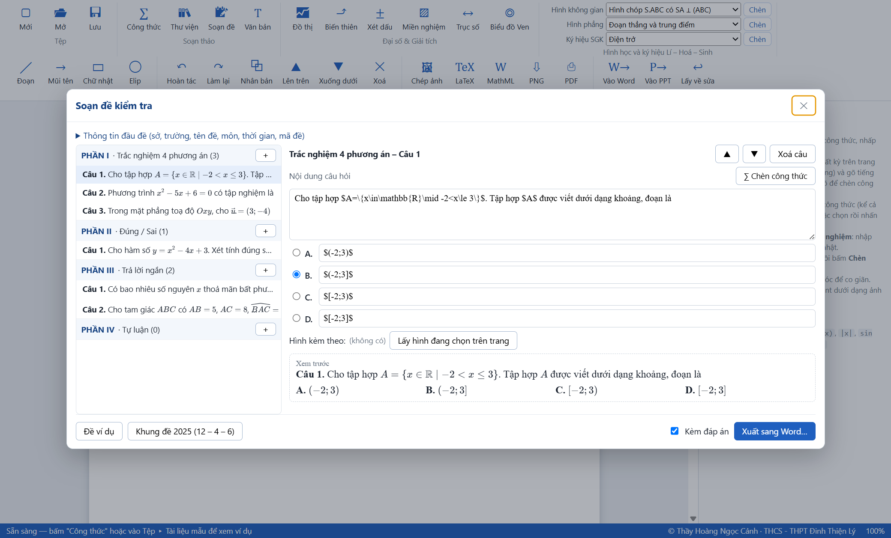
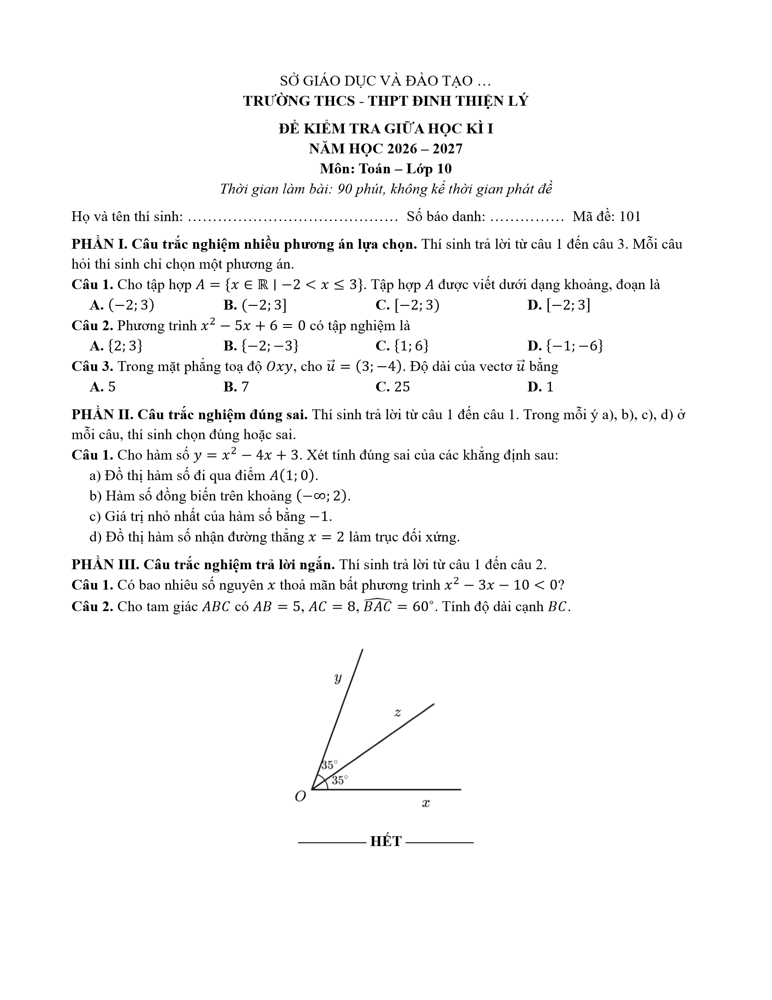
Đề được lưu cùng tệp .tvs, mở lại tệp là soạn tiếp được. Đã có công thức trong Word thì dùng các nút "Thống nhất định dạng" (chương 10) như bình thường.
Công thức chèn dạng ảnh mặc định dùng phông kiểu sách toán (giống LaTeX). Vào Xem ▸ Phông công thức: kiểu Times New Roman để chữ trong công thức cùng kiểu với chữ thường của Word; chọn lại Phông công thức: mặc định để trở về. Phần mềm nhớ lựa chọn cho lần sau.
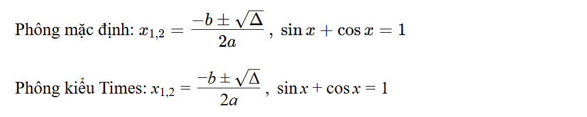
Sáu nút trong nhóm Thống nhất định dạng công thức của Word chuyển toàn bộ công thức một loại trong tài liệu đang mở sang loại khác:
| Nút | Tác dụng |
|---|---|
| MathType → ToanViet | Thay mọi công thức MathType bằng công thức ToanViet |
| ToanViet → MathType | Thay mọi công thức ToanViet bằng đối tượng MathType (nhấp đúp sẽ mở MathType) |
| Equation → ToanViet | Thay mọi công thức Equation của Word bằng công thức ToanViet |
| ToanViet → Equation | Thay mọi công thức ToanViet bằng công thức Equation của Word |
| LaTeX → ToanViet | Thay mọi đoạn mã LaTeX viết giữa $…$, $$…$$, \(…\), \[…\] bằng công thức ToanViet |
| ToanViet → LaTeX | Thay mọi công thức ToanViet bằng mã LaTeX đặt giữa hai dấu $ |
Các trợ lí AI thường xuất công thức ở dạng mã LaTeX, ví dụ Nghiệm là $x=\frac{-b\pm\sqrt{\Delta}}{2a}$. Cách xử lý:
$).Số tiền viết kiểu "$5 và $10" không bị nhận nhầm là công thức. Đoạn mã LaTeX nào không dựng được thì giữ nguyên dạng chữ.
Công thức sau khi chuyển sang ToanViet vẫn sửa được như công thức soạn mới: nhấp đúp vào nó, hoặc chọn rồi bấm Ctrl+Alt+E, hoặc nhấp chuột phải ▸ Sửa bằng ToanViet. Thanh trạng thái của Word báo "ToanViet Studio đang mở công thức để sửa…"; lần đầu sau khi mở máy, phần mềm có thể cần vài giây để khởi động.
Đã kiểm tra trọn vòng trên tài liệu 36 công thức MathType: MathType → ToanViet → sửa → lưu, đóng, mở lại → Equation → ToanViet → MathType → ToanViet; không mất công thức nào, nội dung công thức giữ nguyên.
| Việc | Cách làm |
|---|---|
| Lưu / mở tài liệu ToanViet | Ctrl+S / Ctrl+O (tệp .tvs) |
| Chép một đối tượng thành ảnh | Chọn rồi Ctrl+C, dán vào Word, PowerPoint hay phần mềm khác |
| Xuất ảnh PNG | Ctrl+E: đối tượng đang chọn, hoặc cả trang nếu không chọn gì |
| Xuất PDF cả trang (A4) | Ctrl+P |
| Chép mã LaTeX / MathML của công thức | Nút LaTeX / MathML trên thanh công cụ |
| Thoát | Ctrl+Q |
tên-tệp.tvs.bak. Lưu nhầm thì đổi tên tệp .bak lại thành .tvs để lấy lại.Khi chép LaTeX hoặc MathML sang phần mềm khác, dấu đồng dạng được đổi thành ký hiệu ∽ chuẩn của phần mềm đó.
Nút Thư viện (Ctrl+L) lưu các công thức, hình, trục số… hay dùng để chèn lại bằng một cú nhấp.
.tvslib; gửi tệp qua email, Zalo, USB. Người nhận bấm Nhập gói thư viện; mục đã có sẵn sẽ được bỏ qua.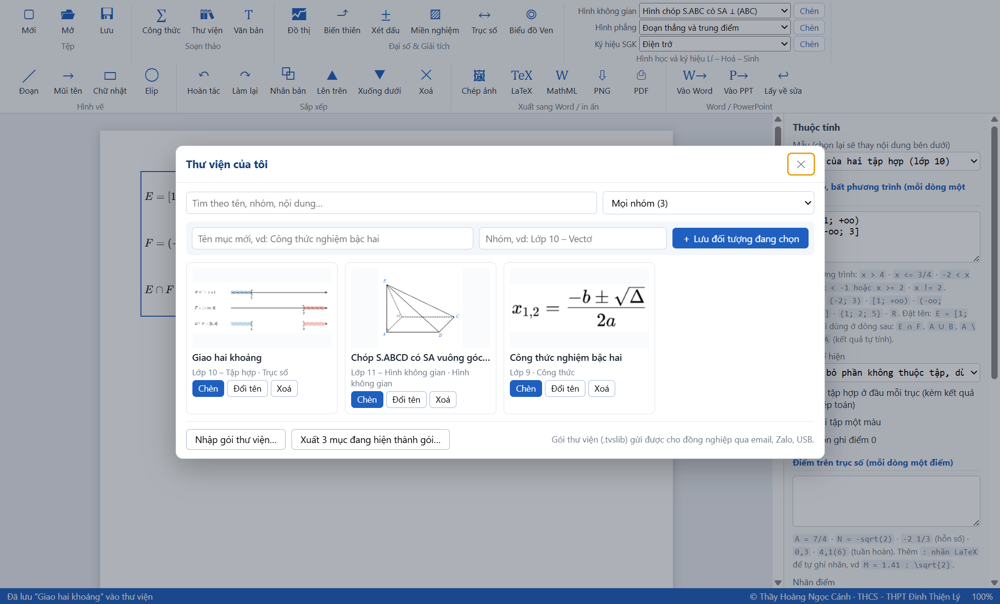
ThuVien-<tên bạn>.tvslib trong thư mục chung.Người phụ trách chỉ cần chép bộ cài bản mới (ToanVietStudio-Setup-x.y.z.exe) vào thư mục dùng chung. Khi mở phần mềm, các máy đã chọn thư mục này sẽ được hỏi có cài bản mới không; đồng ý thì phần mềm đóng lại (hỏi lưu nếu cần) và chạy bộ cài. Cũng có thể kiểm tra bất cứ lúc nào bằng Trợ giúp ▸ Kiểm tra bản mới.
goc … = ? và ghi … = ? thay cho gõ số đo bằng tay, để số luôn khớp với hình..tvs để lần sau mở ra sửa, rồi xuất PNG hoặc chép từng phần sang Word.| Phím | Tác dụng |
|---|---|
| Ctrl+M | Công thức mới (khi đang gõ chữ: chèn công thức tại con trỏ) |
| Enter / F2 | Sửa đối tượng đang chọn |
| Ctrl+C / Ctrl+X / Ctrl+V | Chép thành ảnh / cắt / dán đối tượng trong trang |
| Ctrl+D / Delete | Nhân bản / xoá |
| Ctrl+N / Ctrl+O / Ctrl+S | Mới / mở / lưu |
| Ctrl+E / Ctrl+P | Xuất PNG / xuất PDF |
| Ctrl+Enter / Esc (khi mở từ Word) | Chèn và đóng / đóng không chèn |
| Hiện tượng | Cách xử lý |
|---|---|
| Không thấy thẻ ToanViet trong Word | File ▸ Options ▸ Add-ins ▸ COM Add-ins ▸ Go, đánh dấu ToanViet Studio. Nếu không có trong danh sách, cài lại khi Word đang đóng. |
| Bấm chèn mà báo "Chưa mở tài liệu Word nào" | Mở Task Manager, tắt các tiến trình Microsoft Word chạy ẩn (hoặc khởi động lại máy) rồi mở lại Word. |
| Phím Ctrl+Alt+Q không mở ToanViet | Có thể một add-in khác đang dùng phím này; dùng nút Công thức mới trên thẻ ToanViet. |
| Công thức lệch so với dòng chữ, hoặc vectơ thiếu mũi tên (công thức chèn bằng bản cũ) | Nhấp đúp vào công thức rồi bấm chèn lại. |
| Nhấp đúp vào công thức ToanViet mà không mở ra để sửa | Chờ vài giây (xem thanh trạng thái của Word). Nếu phần mềm báo hình không có dữ liệu ToanViet, công thức đó đã mất dữ liệu (tài liệu từng qua phần mềm khác) — cần soạn lại. Nếu không có gì xảy ra, kiểm tra add-in ToanViet còn được bật (dòng đầu bảng này). |
| Chuyển đổi báo "không chuyển được" | Thông báo có ghi lỗi của công thức đầu tiên; gửi tệp và nội dung thông báo cho tác giả. |
| Hình phẳng báo lỗi đỏ dưới khung Thuộc tính | Đọc dòng lỗi: nó chỉ ra dòng kịch bản sai (thiếu điểm, sai tên lệnh, ba cạnh không tạo được tam giác…). |
| Windows cảnh báo khi chạy bộ cài | Bộ cài chưa có chữ ký số: chọn More info ▸ Run anyway. |
Vào Trợ giúp ▸ Báo lỗi / góp ý…, mô tả ngắn điều đã xảy ra rồi bấm Tạo tệp báo lỗi. Phần mềm tạo trên Desktop một tệp văn bản (phiên bản, mô tả, đối tượng đang chọn, các thông báo lỗi gần đây) và một ảnh màn hình. Bạn mở xem trước, rồi đính kèm vào thư gửi tác giả. Phần mềm không tự gửi gì đi.
Thầy Hoàng Ngọc Cảnh — Giáo viên trường THCS - THPT Đinh Thiện Lý — canhld@gmail.com